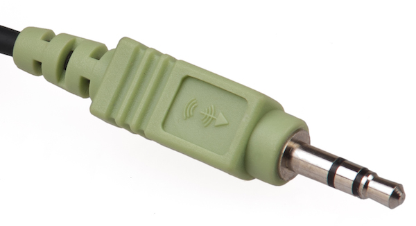
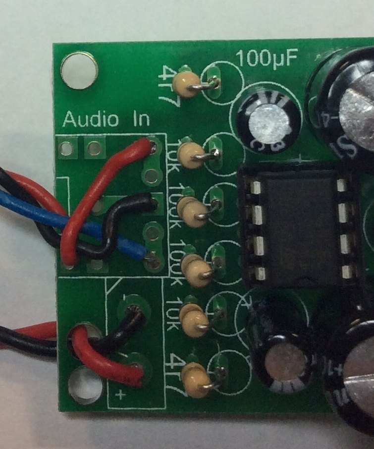

Sock-et to me
Table of Contents

1 Adding the input
This is the last stage of the soldering. By the time you're done here, you'll be able to test your circuit by powering it up, and connecting it to any device with a headphone jack on it.
Headphones

- When you look at a stereo headphone plug, you'll notice there are small insulated bands which break the plug into three areas.
- The part at the pointed end is the audio signal for the left speaker.
- The middle section carries the right audio channel.
- The bottom part of the plug is the Ground (0V) connection. In order to work, the input signal (e.g. phone, TV, mp3 player) and the speaker need to have the negative ends of their power supplies tied together.
Build it
- Read everything before you do anything
- The PCB is built so that you could connect a phone directly to the PCB using an on-board 3.5mm socket if you wanted to (like you've done in the past with the digital die and PIC fan projects).
- It's almost certainly going to be more convenient if you can have the 3.5mm jack (socket) mounted wherever you want on the outside of your product housing, though.
- Fetch a 3.5mm stereo jack, and 3x 10cm pieces of multi-core wire. Ideally, in three different colours. As always, its more "correct" to use black for the ground wire, but it doesn't affect how the product works.
- Connect a wire to each of the metal lugs as shown here, and solder them on:

- Now, twist all three wires together like you did with the speakers, then solder them into the PCB, as shown here. Note that the black (common) wire is in the middle. In order to get the inputs the correct way around, make sure you run the blue wire to the bottom connector on the PCB. Otherwise, you'll have left audio coming out of the right speaker!

- You've now completed the circuit. Connect a 9V battery, plug a test device into a sound source and you should have a working amplifier.
- Remember that in order to get the full volume from your unit, it needs to be mounted inside an enclosure. Don't panic if you think it's a bit quiet at the moment!